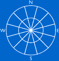

The Roughness Rose

If we have measured the wind speed exactly at hub height over
a long period at the exact spot where a wind turbine will be
standing we can make very exact predictions of energy production.
Usually, however, we have to recalculate wind measurements made
somewhere else in the area. In practice, that can be done with
great accuracy, except in cases with very complex terrain (i.e.
very hilly, uneven terrain).
 Just like we use a wind
rose to map the amount of wind energy coming from different
directions, we use a roughness rose to describe the roughness of the terrain in different directions
from a prospective wind turbine site.
Just like we use a wind
rose to map the amount of wind energy coming from different
directions, we use a roughness rose to describe the roughness of the terrain in different directions
from a prospective wind turbine site.
 Normally, the compass is divided into 12
sectors of 30 degrees each, like in the picture to the left,
but other divisions are possible. In any case, they should match
our wind rose, of course.
Normally, the compass is divided into 12
sectors of 30 degrees each, like in the picture to the left,
but other divisions are possible. In any case, they should match
our wind rose, of course.
 For each sector we make an estimate of the
roughness of the terrain, using the definitions from the Reference Manual section.
In principle, we could then use the wind
speed calculator on the previous page to estimate for each
sector how the average wind speed is changed by the different
roughness of the terrain.
For each sector we make an estimate of the
roughness of the terrain, using the definitions from the Reference Manual section.
In principle, we could then use the wind
speed calculator on the previous page to estimate for each
sector how the average wind speed is changed by the different
roughness of the terrain.
Averaging
Roughness in Each Sector
In most cases, however, the roughness will not fall neatly into
any of the roughness classes, so we'll have to do a bit of averaging.
We have to be very concerned with the roughness in the prevailing
wind directions. In those directions we look at a map to
measure how far away we have unchanged roughness.
Accounting
for Roughness Changes Within Each Sector
Let us imagine
that we have a sea or lake surface in the western sector (i.e.
roughness class 0) some 400 m from the turbine site, and 2 kilometres
away we have a forested island. If west is an important wind
direction, we will definitely have to account for the change
in roughness class from 1 to 0 to 3.
 This requires more advanced models and software
than what we have shown on this web site. It is also useful to
be able to use the software to manage all our wind and turbine
data, so at a future update of this site we'll explain how professional
wind calculation software works.
This requires more advanced models and software
than what we have shown on this web site. It is also useful to
be able to use the software to manage all our wind and turbine
data, so at a future update of this site we'll explain how professional
wind calculation software works.
 Meanwhile, you may look at
the Links page to find the link
to Risoe's WAsP model and Energy & Environmental Data's WindPro
Windows-based software.
Meanwhile, you may look at
the Links page to find the link
to Risoe's WAsP model and Energy & Environmental Data's WindPro
Windows-based software.
Accounting
for Wind Obstacles
It is extremely important to account for local wind
obstacles in the prevailing wind direction near the turbine
(closer than 700 m or so), if one wants to make accurate predictions
about energy output. We return to that subject after a couple
of pages.

|
Back | Home
| Forward |
© Copyright 2000 Soren Krohn.
All rights reserved.
Updated 9 September 2000
http://www.windpower.org/tour/wres/rrose.htm